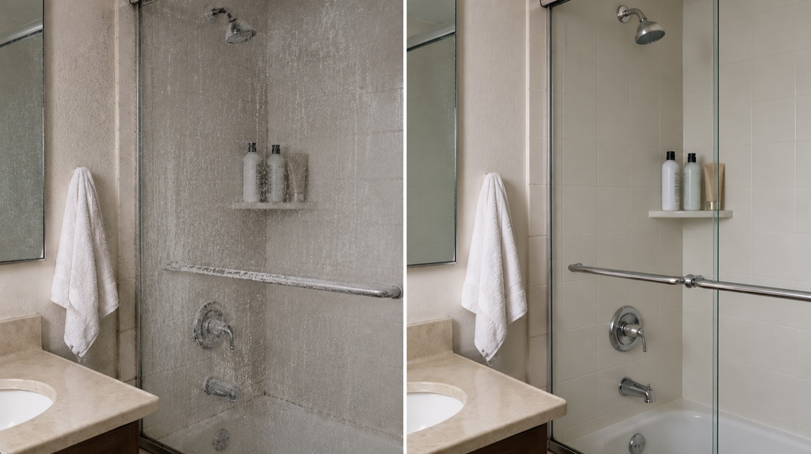
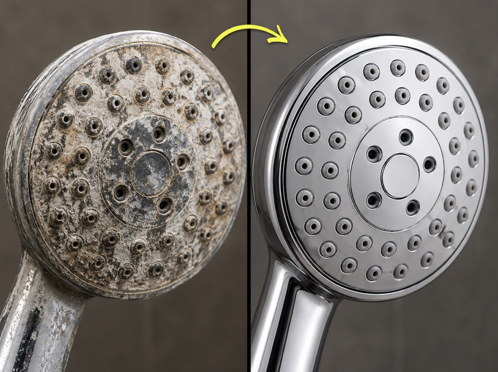

MyApartmentWaterQuality.com · Free lookup, takes about 30 seconds
How Hard Is Your Shower Water?
Water hardness changes from one city to the next, and it quietly decides how your hair and skin feel out of the shower. Enter your zip code to see your water's full report instantly.
If Your Hair Behaves Better on Vacation, This Is Probably Why
Same products, different city. Suddenly your shampoo lathers and your skin stops feeling so tight. Most people give credit to the hotel or just being relaxed.
The boring explanation is this: the water changed. Hardness — the amount of dissolved calcium and magnesium in your water — varies enormously by location. Some cities have water that's nearly soft. Others are two steps past "very hard" on the official scale, and every rinse leaves a fine mineral film behind on hair and skin (the same buildup you see on your shower).
If you rent, this hits harder, because you didn't pick your building's water and you can't exactly renovate your way out of it. Knowing what kind of water is in your pipes is the place to start.

Hard water most often shows up as:
- Frizz and poof, no matter the product
- Tangles that fight the brush
- Tight-feeling skin after showering
- Buildup that makes hair feel coated
- Curls and waves that fall flat
What Your Number Will Tell You
The US Geological Survey measures water hardness in milligrams of calcium carbonate per liter, and sorts it into four categories:
Official hardness bands, mg/L as CaCO3
Soft: 0–60 · Moderately hard: 61–120 · Hard: 121–180 · Very hard: over 180

Most of the western and east-central United States sits in the hard and very hard bands. Plenty of zip codes test at double or triple the "very hard" threshold.
Here's why the number matters in the shower specifically. Those dissolved minerals don't rinse away clean — they react with soap and settle onto whatever the water touches. On your shower door, that's the white crust you scrub off. On your hair and skin, it's an invisible film that builds a little with every wash.
Your report shows exactly where your zip code lands on the scale, plus what that level of hardness typically means for hair and skin.

Where This Data Comes From
Your score is drawn from public water data: USGS hardness measurements and utility water-quality reporting for your area. We didn't invent the scale and we can't flatter your result. Some zip codes come back soft, and if yours does, your report will say so.
Hardness itself is well studied. An electron-microscope study in the International Journal of Dermatology found heavier mineral deposits and a rougher, thinner strand after thirty days of hard-water washing, and a Journal of Investigative Dermatology study found hard water leaves significantly more soap residue on skin after washing. Your report links out to both.
See What You're Showering In
Is it actually free?
Yes. The lookup and the full report cost nothing, and there's nothing to enter beyond your zip and email.
Where does the data come from?
Public sources: USGS hardness data and local utility water-quality reporting. The report cites them so you can check our work.
What happens after I hit the button?
Your full report appears on screen immediately, and you can download a copy to keep. That's it, unless you decide you want more from us.